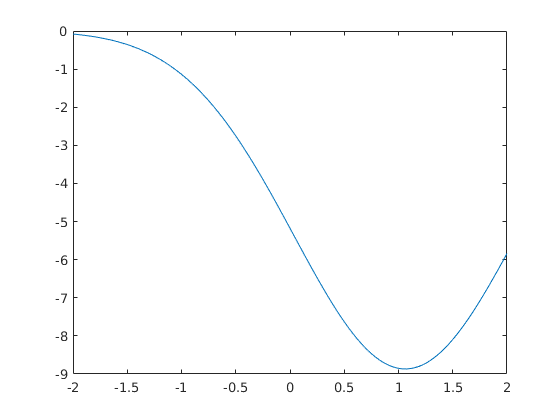
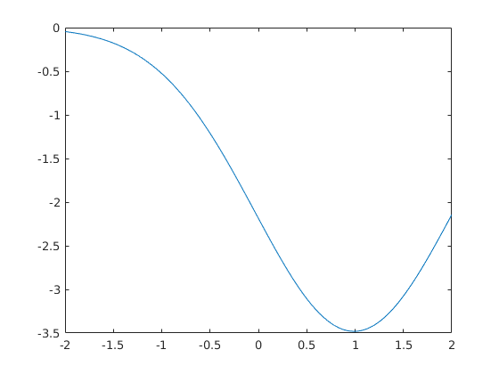
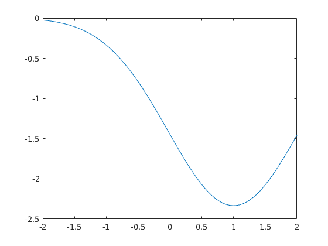
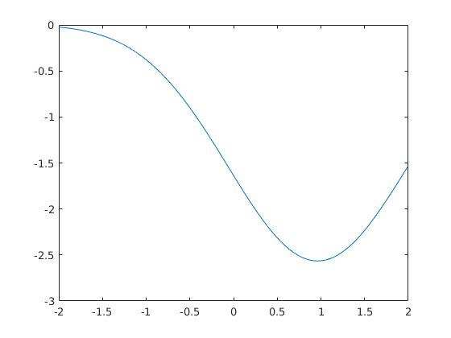
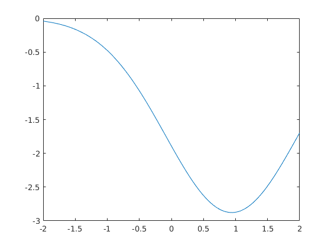
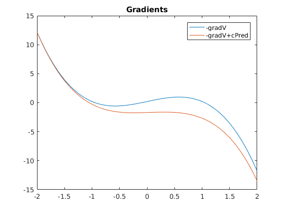
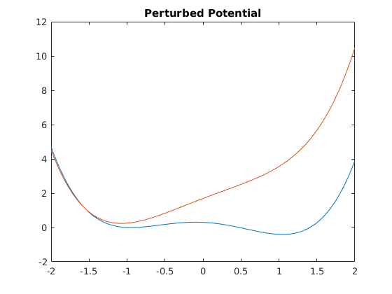

V=@(x) 1/2.*x.^4-x.^2 - 0.2*x+0.3;
gradV = @(x) 2*x.*(x.^2-1)-0.2;
dt = 0.01;
sdt = sqrt(dt);
beta = 3;
sigma = sqrt(2/beta);
nvs = 1;
ntrjs = 100;
opt_steps=5;
nsteps = 150;
n_pred=100;
sk=1;
l=1;
pathfunc = ones(ntrjs,1);
c_old = zeros(opt_steps,n_pred);
c_pred=0;
bias=0;
for opt = 1:opt_steps
time=zeros(1,ntrjs);
X = zeros(ntrjs,nsteps);
X(:,1)=1;
X_nonbias = zeros(ntrjs,nsteps);
X_nonbias(:,1) = 1;
for i = 1:ntrjs
Is=0;
Id=0;
x = 1;
for j = 2:nsteps
eta=randn(1);
bias=0;
if opt==1
x = x + (bias - gradV(x)) * dt + eta * sigma*sdt;
else
for t=1:ntrjs
K_pred = sk/sqrt(2*pi)*l.^2.*exp(-0.5*(x-X(t,:)).^2/l.^2);
bias = bias - pathfunc(t)/(2*beta*ntrjs)*( K_pred*c*dt + K_pred*(X_nonbias(t,:)'));
end
x = x + (bias-gradV(x) ) * dt + eta * sigma*sdt;
end
X(i,j) = x;
X_nonbias(i,j) = x-bias*dt;
Is = Is - bias * eta/ sigma * sdt;
Id = Id - bias.^2 / sigma^2 *dt;
if x < -0.9 && x > -1.1
time(i) = j;
pathfunc(i) = exp(-beta*j*dt)*exp(Is+0.5*Id);
X(i,j:end)=x;
X_nonbias(i,j:end) = x-bias*dt;
break;
else
pathfunc(i) = exp(0.1)*exp(Is+0.5*Id);
end
end
end
K=zeros(nsteps,nsteps);
A=zeros(nsteps,nsteps);
b=zeros(nsteps,1);
for t=1:ntrjs
for i=1:length(X(t,:))
for j=1:length(X(t,:))
K(i,j) = sk/sqrt(2*pi)*l.^2.*exp(-0.5*(X(t,i)-X(t,j)).^2/l.^2);
end
end
A = A + pathfunc(t)*K*dt + 2*beta*eye(nsteps,nsteps);
b = b + pathfunc(t)*(K*(X_nonbias(t,:)'));
end
c = A\-b;
c_old(opt,:) = c_pred;
x_pred = linspace(-2,2,n_pred);
K_pred = zeros(length(x_pred),nsteps);
c_pred=0;
for t=1:ntrjs
for i=1:length(x_pred)
for j=1:length(X(t,:))
K_pred(i,j) = sk/sqrt(2*pi)*l.^2.*exp(-0.5*(x_pred(i)-X(t,j)).^2/l.^2);
end
end
c_pred = c_pred - pathfunc(t)/(2*beta*ntrjs)*( K_pred*c*dt + K_pred*(X_nonbias(t,:)'));
end
figure(opt)
plot(x_pred, c_pred)
fprintf('Trajectories in T %d \n', sum(time>0) )
fprintf('|c_new-c_old|_2 = %f \n', norm(c_pred'-c_old(opt,:)))
end
figure(6)
plot(x_pred, -gradV(x_pred)); hold on
plot(x_pred, c_pred -gradV(x_pred)' )
legend('-gradV','-gradV+cPred')
title('Gradients')
hold off
dx=x_pred(2)-x_pred(1);
per_pot = zeros(1,n_pred+1);
control= zeros(1,n_pred+1);
for i=2:n_pred+1
per_pot(i) = per_pot(i-1) + (-c_pred(i-1) + gradV(x_pred(i-1)) )*dx;
control (i)= control(i-1)-sqrt(2)* c_pred(i-1)*dx;
end
figure(7)
plot(x_pred,V(x_pred)); hold on
plot(x_pred,per_pot(2:end)+5); hold off
title('Perturbed Potential')
Trajectories in T 2
|c_new-c_old|_2 = 56.599611
Trajectories in T 58
|c_new-c_old|_2 = 34.211842
Trajectories in T 41
|c_new-c_old|_2 = 7.426324
Trajectories in T 55
|c_new-c_old|_2 = 1.541694
Trajectories in T 48
|c_new-c_old|_2 = 2.167886
      